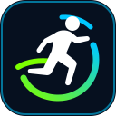
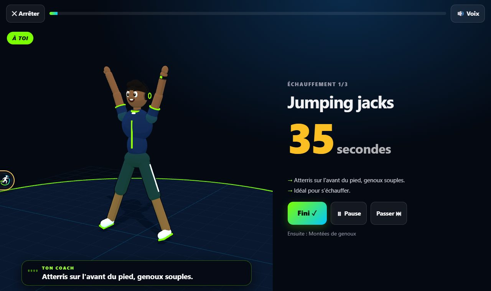
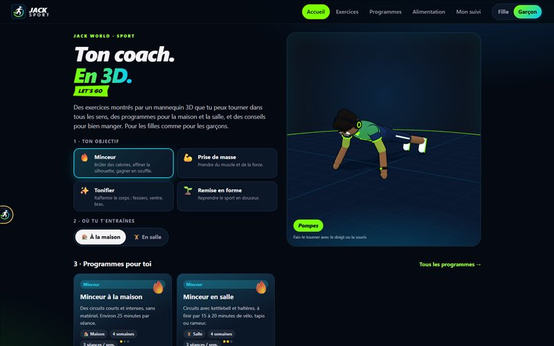

Coach qui parle
Jack fait chaque exercice avec toi en 3D et te guide à la voix : il t'explique le mouvement pendant le repos, compte tes répétitions, t'encourage et lance le 3, 2, 1. Ses paroles s'affichent aussi à l'écran.

JACK WORLD · JACK SPORT · TON COACH
LET'S GOChaque exercice montré par un coach 3D que tu fais tourner dans tous les sens, et qui te guide à la voix pendant toute la séance. Des programmes pour la maison et la salle, pour les filles comme pour les garçons, et des conseils pour bien manger.
Ouvrir JACK SPORT

Jack fait chaque exercice avec toi en 3D et te guide à la voix : il t'explique le mouvement pendant le repos, compte tes répétitions, t'encourage et lance le 3, 2, 1. Ses paroles s'affichent aussi à l'écran.
Sans matériel, avec des haltères, ou avec tout le matériel de la salle : choisis ce que tu as.
Rien à payer, rien à créer. Ton suivi reste dans ton téléphone ou ton ordinateur.
JACK SPORT donne des conseils généraux. Si tu as un problème de santé, moins de 18 ans pour les conseils alimentaires, ou une douleur, demande d'abord l'avis d'un médecin.